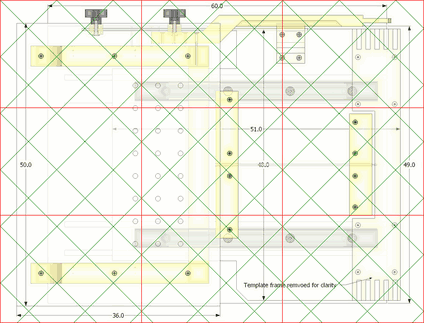

Make sure that "fit to page" is turned off and the print scale is set to 100%. First print just one page of the PDF file and check that the horizontal and vertical distance between grid intersections is 10 cm. If you use a laser printer and the printout is off by 2% or less (2 mm error per 10 cm), it's likely that your printer isn't scale accurate. Ink jet printers, even cheap ones, tend to be much more accurate. You can also use BigPrint to calibrate out printer scale error (see below)
If the scale is off by more than 2%, it's probably a configuration or driver issue. Be sure that all scaling is turned off. if in doubt, use Adobe acrobat reader or Foxit reader to print the PDF files. The default PDF program on Macs, and Google chrome are not as good at preserving scale on printing.
You can also print using the BigPrint program
You can also use the free BigPrint
program to re-paginate as you wish to make best use of larger paper sizes
(such as A3 or 11x17) on wide carriage printers or office laser printers.
You can also calibrate out any scale error your (laser) printer may add.
Just load those files into BigPrint to print.
Please note that the free eval
version will suffice for this (no need to buy BigPrint). Just download and
run the free eval version and drag the images onto the program.
If you are familiar with graphics programs, you can also print these images using a graphics program of your choice. Just click on any image, load it into a graphics program of your choice, and make sure to print the single page images at 127 DPI, and the multi-page images at 82 DPI.
| Plunge mechanism | Spring cams and follower clamp | Stock holding clamp |
| Table joint templates | Template holder joints | Template holder joints |
If you print all the large 1:1 templates, it's 102 pages. Having the templates can make it easier to track and check parts, but I do not recommend printing out all the templates. All the necessary dimensions are in the plans, and for the tricky shapes, the six pages of 1:1 templates above should be sufficient.
The alignment grid is 10 cm between intersections, measured horizontally and vertically. It's best to print just one test page and check the scale before printing more.
|
left_1to1.pdf This PDF file is a 1:1 side view of the completed machine. The PDF contains 9 pages. |
top_1to1.pdf This PDF file is a 1:1 top view of the machine, without the pantograph. The PDF contains 9 pages.  |
|
big1.pdf This PDF file contains all the hardwood parts, 9 pages. |
big2.pdf This PDF file contains all softwood parts. 9 pages. |
This PDF file contains all the smaller parts made of 18 mm plywood. The PDF contains 12 pages.
This PDF file contains all the large parts cut from 18 mm plywood.
18 pages.
{kind=link}
{kind=link}
{kind=link}
{kind=link}
{kind=link}
{kind=link}
{kind=link}
{kind=link}
{kind=link}
{kind=link}
{kind=link}
{kind=link}